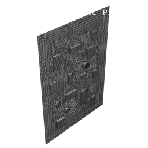
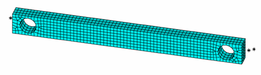

Technology Showcases#
The following examples initially come from the APDL Technology Showcase Manual. They initially were MAPDL files. They have been reproduced
in Python files using PyMAPDL with the ansys-mapdl-core library.
These examples are a work-in-progress and will be extended during the life of this project.


Dynamic simulation of a printed circuit board assembly
Dynamic simulation of a printed circuit board assembly


Calibrating and Validating a Hyperelastic Constitutive Model